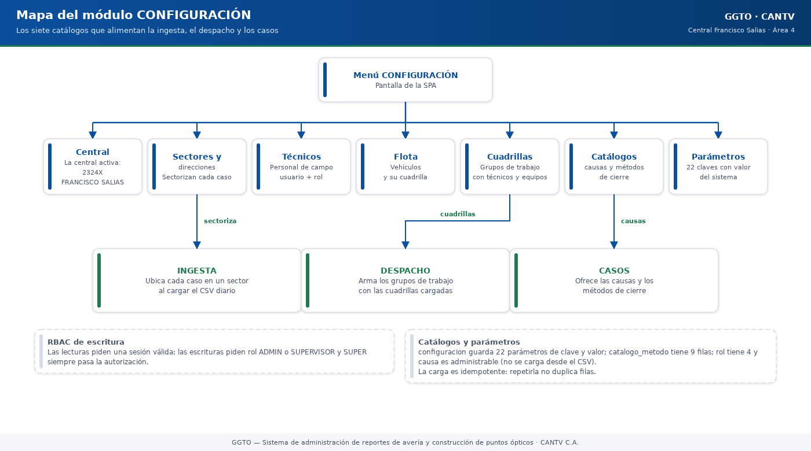

Sistema de administración de reportes de avería y construcción de puntos ópticos
Manual literal · ImplementaciónManual de implementación: módulo CONFIGURACIÓN
Este manual explica, con palabras sencillas, cómo funciona el módulo CONFIGURACIÓN de GGTO: la sección donde se registran la central, los sectores, los técnicos, la flota, las cuadrillas, los catálogos y los parámetros del sistema. Está dirigido a supervisores y administradores de la Central Francisco Salias (Área 4) de CANTV, y también sirve de consulta para técnicos de campo. La aplicación móvil todavía no está desarrollada (el Ciclo 8 quedó pospuesto), así que la configuración se hace desde la interfaz web. Cuando algo no pudo comprobarse, se indica […]
Este manual explica, con palabras sencillas, cómo funciona el módulo CONFIGURACIÓN de GGTO: la sección donde se registran la central, los sectores, los técnicos, la flota, las cuadrillas, los catálogos y los parámetros del sistema. Está dirigido a supervisores y administradores de la Central Francisco Salias (Área 4) de CANTV, y también sirve de consulta para técnicos de campo. La aplicación móvil todavía no está desarrollada (el Ciclo 8 quedó pospuesto), así que la configuración se hace desde la interfaz web. Cuando algo no pudo comprobarse, se indica con la frase «pendiente de confirmar».
1Empezar en 5 minutos
- Entre a GGTO con su P00 y su clave. Abra la sección CONFIGURACIÓN desde el menú.
- Si su rol es Técnico, verá las páginas en modo solo lectura: podrá consultar, pero no guardar cambios. Para escribir se necesita rol Administrador o Supervisor.
- Empiece por lo básico: revise que la central exista y esté activa. Después cargue los sectores con sus direcciones (los patrones de texto que sirven para ubicar cada caso).
- Continúe con los técnicos, la flota de vehículos y las cuadrillas (los grupos de trabajo con su vehículo y sus herramientas).
- En la lista de Técnicos, mire la columna Cuenta: un distintivo de color indica si el técnico ya activó su acceso (Sin alta, Activo, Bloqueado, Cambio de clave o Inactivo). Si eres Super Usuario, verás además el botón «Palabras», para generar un juego nuevo cuando un técnico pierde las suyas.
- Al terminar, revise los catálogos (causas y métodos) y los parámetros. Casi todo se desactiva en lugar de borrarse: así no se pierde el historial.
2Visión general
2.1Alcance funcional (RF-02, RF-03, RF-04, RF-38)
El módulo CONFIGURACIÓN agrupa CENTRAL, TÉCNICOS, FLOTA y CUADRILLA. Además atiende los requisitos de autorización por rol (RNF-21). Los requerimientos que cubre son:
| Identificador | Requerimiento |
|---|---|
| RF-02 | Crear perfiles y accesos de los trabajadores (alta, edición, roles y credenciales) |
| RF-03 | Gestionar las flotas (los vehículos de la central) |
| RF-04 | Gestionar las cuadrillas (trabajadores, flota y herramientas) |
| RF-38 | Configurar la central y los sectores de trabajo |
Aclaratoria sobre RF-05: «Gestionar insumos» está marcado explícitamente «Para una 2.ª versión» y pertenece al módulo INSUMOS, no a CONFIGURACIÓN. Por eso este manual no describe operaciones de insumos: no forman parte del alcance implementado del módulo.
2.2Estructura del router y convenciones
Un router es el conjunto de direcciones web que atiende un módulo. El de configuración usa
el prefijo /api/v1 y la etiqueta «configuración». Sobre esa base se definen tres reglas
comunes:
- Escritura restringida: solo
ADMINySUPERVISORpueden crear, modificar o desactivar. - Error 404 uniforme: cuando un recurso no existe, se responde siempre con el mismo formato y con el nombre del recurso.
- Error 409 uniforme: cuando hay un choque de datos (por ejemplo, un código repetido), se deshace el intento y se responde con un mensaje claro.

Código del gráfico (Mermaid)
flowchart TD
P["Menú CONFIGURACIÓN"] --> C["Central"]
P --> SE["Sectores y direcciones"]
P --> T["Técnicos"]
P --> F["Flota"]
P --> CU["Cuadrillas"]
P --> CA["Catálogos: causas y métodos"]
P --> PA["Parámetros: clave y valor"]
C --> SE
C --> T
C --> F
C --> CU
SE --> ING["INGESTA: ubica cada caso en un sector"]
CU --> DES["DESPACHO: arma los grupos de trabajo"]
CA --> CAS["CASOS: causas y métodos de cierre"]2.3RBAC de escritura
El RBAC es el control de acceso por roles. Cada operación de lectura exige una sesión válida;
cada operación de escritura exige rol ADMIN o SUPERVISOR. Se puede comprobar en cualquier
pareja de operaciones:
| Operación | Quién puede |
|---|---|
| Listar centrales | Cualquier usuario con sesión válida |
| Crear central | ADMIN o SUPERVISOR |
| Crear sector | ADMIN o SUPERVISOR |
| Crear técnico | ADMIN o SUPERVISOR |
| Crear cuadrilla | ADMIN o SUPERVISOR |
| Crear causa | ADMIN o SUPERVISOR |
| Actualizar parámetro | ADMIN o SUPERVISOR |
| Ver la columna Cuenta del listado de técnicos | Cualquier usuario con sesión válida |
| Regenerar las palabras de un técnico (botón «Palabras») | Solo SUPER (D-67) |
El detalle del mecanismo de roles está en el manual de autenticación y RBAC. En resumen: la
regla concede la operación a los roles enumerados y también al rol SUPER.
2.4Desactivación lógica (soft delete)
Ningún recurso se borra físicamente desde estas operaciones: se marca un estado. Esto se llama desactivación lógica o soft delete. Así se conserva el historial y no se rompen las relaciones con otros datos.
| Recurso | Qué pasa al «eliminar» |
|---|---|
| Central | Pasa a inactiva |
| Sector | Pasa a inactivo |
| Técnico | Pasa a estado «INACTIVO» |
| Flota | Pasa a «FUERA_SERVICIO» |
| Causa | Pasa a inactiva |
Las relaciones de cuadrilla sí se cierran por fecha: se registra la fecha de salida del integrante. La única eliminación física del módulo es la de una dirección de sector.
3Endpoints por recurso
Un endpoint es una dirección web que el sistema atiende. Esta sección recorre las operaciones de cada recurso.
3.1central
| Operación | Qué hace |
|---|---|
GET /api/v1/central |
Lista ordenada por identificador; permite ver solo las activas |
POST /api/v1/central |
Crea una central y responde 201 |
GET /api/v1/central/{id_central} |
Obtiene una central o responde 404 |
PATCH /api/v1/central/{id_central} |
Actualiza solo los campos enviados |
DELETE /api/v1/central/{id_central} |
Desactiva y responde 204 |
El listado aplica el filtro de «solo activas». La creación delega el choque de código duplicado al mensaje «el código de central ya existe». La actualización parcial solo escribe los campos que se envían.
3.2sectores y sector_direccion
| Operación | Qué hace |
|---|---|
GET /api/v1/sectores |
Ordena por prioridad y nombre; filtra por central y por activos |
POST /api/v1/sectores |
Crea el sector con sus direcciones; responde 201 |
GET /api/v1/sectores/{id_sector} |
Obtiene un sector o responde 404 |
PATCH /api/v1/sectores/{id_sector} |
Actualiza solo los campos enviados |
DELETE /api/v1/sectores/{id_sector} |
Desactiva y responde 204 |
POST /api/v1/sectores/{id_sector}/direcciones |
Agrega un patrón de dirección; responde 201 |
DELETE /api/v1/sectores/{id_sector}/direcciones/{id_direccion} |
Elimina el patrón; responde 204 |
La creación primero valida que la central exista y luego separa las direcciones del resto de
los campos. El modelo declara la relación de forma que el sector pueda devolver sus
direcciones. Al eliminar una dirección se verifica que pertenezca al sector indicado; si no,
responde 404.
3.3tecnicos
| Operación | Qué hace |
|---|---|
GET /api/v1/tecnicos |
Ordena por nombre y apellido; filtra por central y estado |
POST /api/v1/tecnicos |
Valida la central y crea; responde 201 |
GET /api/v1/tecnicos/{id_tecnico} |
Obtiene un técnico o responde 404 |
PATCH /api/v1/tecnicos/{id_tecnico} |
Actualiza solo los campos enviados |
DELETE /api/v1/tecnicos/{id_tecnico} |
Pasa a «INACTIVO» y responde 204 |
El filtro de estado usa el nombre real de la columna (status). La creación valida la
central y avisa del choque de P00 o cédula duplicados.
Además de los datos del trabajador, cada fila del listado trae un dato calculado llamado
estado de la cuenta (estado_cuenta), que es el que alimenta la columna Cuenta.
3.3.1La columna Cuenta (D-67)
Cuando el supervisor da de alta a un técnico, ese técnico todavía no tiene cuenta de acceso. La columna Cuenta muestra, con un distintivo de color, en qué punto está:
| Distintivo | Color | Qué significa |
|---|---|---|
| Sin alta | Crema (ámbar) | El P00 existe, pero el técnico aún no creó su cuenta |
| Activo | Verde claro | La cuenta funciona: el técnico puede iniciar sesión |
| Bloqueado | Rojo claro | Superó los intentos de clave y debe recuperarse |
| Cambio de clave | Azul claro | La cuenta exige cambiar la clave antes de continuar |
| Inactivo | Gris | La cuenta o el técnico está desactivado |
El cálculo lo hace el servidor, no el navegador, y se resume así:
- Si el técnico no tiene cuenta o no tiene palabras de seguridad, el estado es Sin alta.
- Si la cuenta está bloqueada, el estado es Bloqueado.
- Si la cuenta o el técnico están inactivos, el estado es Inactivo.
- Si la cuenta exige cambio de clave, el estado es Cambio de clave.
- En cualquier otro caso, el estado es Activo.
Este dato se calcula sin hacer una consulta por cada fila: el servidor busca de una sola vez los usuarios y los dispositivos de seguridad de todos los técnicos del listado.
3.3.2El botón «Palabras» (solo Super Usuario, D-67)
En la columna de acciones aparece un botón «Palabras» que solo ve el Super Usuario. Sirve para cuando un técnico pierde sus 12 palabras de seguridad y ya no puede desbloquear su cuenta ni cambiar su clave.
Al pulsarlo, el sistema pide confirmación al servidor, que genera 12 palabras nuevas,
reemplaza las anteriores (las viejas dejan de funcionar), desbloquea la cuenta y muestra las
nuevas una sola vez. La acción queda registrada en la tabla auditoria. La operación de
servidor es POST /api/v1/auth/palabras/{p00}/regenerar y el detalle está en el manual de
autenticación y RBAC. Ni el rol ADMIN ni el rol SUPERVISOR pueden ejecutarla: el servidor
responde 403.
3.4flota
| Operación | Qué hace |
|---|---|
GET /api/v1/flota |
Ordena por CAN; filtra por central |
POST /api/v1/flota |
Valida la central y crea; responde 201 |
GET /api/v1/flota/{id_flota} |
Obtiene un vehículo o responde 404 |
PATCH /api/v1/flota/{id_flota} |
Actualiza solo los campos enviados |
DELETE /api/v1/flota/{id_flota} |
Pasa a «FUERA_SERVICIO» y responde 204 |
El choque de CAN o placa duplicados se traduce en 409. Los dos campos son únicos en el
esquema de la base de datos.
3.5cuadrillas (integrantes y herramientas)
| Operación | Qué hace |
|---|---|
GET /api/v1/cuadrillas |
Ordena por código; filtra por central y por activas |
POST /api/v1/cuadrillas |
Crea con integrantes y herramientas; responde 201 |
GET /api/v1/cuadrillas/{id_cuadrilla} |
Obtiene una cuadrilla o responde 404 |
PATCH /api/v1/cuadrillas/{id_cuadrilla} |
Actualiza solo los campos enviados |
POST /api/v1/cuadrillas/{id_cuadrilla}/integrantes |
Incorpora un técnico; responde 201 |
DELETE /api/v1/cuadrillas/{id_cuadrilla}/integrantes/{id_tecnico} |
Cierra la pertenencia; responde 204 |
La creación separa los integrantes y las herramientas del resto de los campos. Las filas de
integrantes se arman con fecha de inicio de hoy y las de herramientas con la fecha y hora de
asignación. Al incorporar un integrante se validan la cuadrilla y el técnico. El retiro busca
la fila activa, responde 404 si no existe y, si existe, fija la fecha de salida en hoy.
No hay operación para borrar una cuadrilla: se desactiva cambiando su marca de activa a falso.
Las rutas de direcciones de sector e integrantes de cuadrilla existen en el sistema con sus direcciones reales, aunque el inventario resumido de endpoints no las desglose. Se documentan aquí porque son parte verificable del contrato.
3.6catalogos (causas y metodos)
| Operación | Qué hace |
|---|---|
GET /api/v1/catalogos/causas |
Ordena por código y subcódigo; por defecto solo activos |
POST /api/v1/catalogos/causas |
Crea una causa; responde 201 |
DELETE /api/v1/catalogos/causas/{id_causa} |
Desactiva la causa; responde 204 |
GET /api/v1/catalogos/metodos |
Ordena por dominio y código; filtra por dominio |
POST /api/v1/catalogos/metodos |
Crea un método; responde 201 |
Las causas se filtran por activas cuando se pide «solo activos», que es el valor por defecto.
Los métodos se filtran por dominio. La carga inicial del esquema trae 9 métodos repartidos en
los dominios CIERRE, ENRUTE, CONTACTO y DIFERIDO. El catálogo de causas se puebla
desde la ingesta del CSV; la carga inicial del esquema no trae causas.
3.7configuracion (clave/valor)
| Operación | Qué hace |
|---|---|
GET /api/v1/configuracion |
Lista todos los parámetros ordenados por clave |
PUT /api/v1/configuracion/{clave} |
Actualiza el valor y, si se envía, la descripción |
El parámetro se busca por su clave. Si no existe, responde 404. El valor es de tipo libre
(Any en el contrato), porque la columna es JSONB. La carga inicial del esquema trae 23
parámetros, entre ellos ingesta.central_codigo, despacho.hora_reporte,
despacho.min_referidos, fallas.umbral_casos, outbox.max_intentos y
seguridad.max_intentos.
Sobre los avisos pendientes: el parámetro
outbox.max_intentoscontrola cuántas veces se reintenta enviar un mensaje guardado en la bandeja de salida (outbox). Los canales previstos son Telegram, correo electrónico y MCP (un canal de integración con otras herramientas); WhatsApp no existe en la versión 1. En producción, Telegram y el correo todavía no tienen credenciales cargadas, así que los envíos quedan PENDIENTES en esa bandeja. Hoy no se puede afirmar que ya notifiquen.
4Esquemas de entrada/salida (app/schemas/config.py)
Los esquemas son los contratos de datos: definen qué campos se aceptan al crear o actualizar y qué campos se devuelven al consultar.
4.1Central y sectores
| Esquema | Campos relevantes |
|---|---|
CentralBase |
Región, estado geográfico, municipio, parroquia, área, código, nombre y si está activa |
CentralCreate |
Hereda todos los campos de CentralBase |
CentralUpdate |
Todos los campos son opcionales (actualización parcial) |
CentralOut |
Agrega el identificador de la central |
SectorDireccionCreate |
Patrón, tipo de coincidencia (CONTIENE, EXACTO o REGEX), normalizar y activo |
SectorCreate |
Central, nombre, código, prioridad de 1 a 999 y lista de direcciones |
SectorOut |
Incluye la lista de direcciones del sector |
La prioridad del sector se declara entre 1 y 999. La salida de dirección de sector es la única que expone su propio identificador y el del sector al que pertenece.
4.2Técnicos, flota y cuadrillas
| Esquema | Detalle |
|---|---|
STATUS_TECNICO |
Valores permitidos: ACTIVO, INACTIVO, VACACIONES, SUSPENDIDO |
TecnicoCreate |
Central, nombre, P00 y estado |
TecnicoUpdate |
No incluye el P00: no es editable |
TecnicoOut |
Agrega el identificador y el estado de la cuenta (estado_cuenta, D-67); su valor por defecto es SIN_ALTA |
STATUS_FLOTA |
Valores permitidos: DISPONIBLE, EN_RUTA, MANTENIMIENTO, FUERA_SERVICIO |
FlotaCreate |
CAN, tipo, marca, modelo, placa, combustible y estados |
ROL_CUADRILLA |
Valores permitidos: REPARADOR_PRINCIPAL, AYUDANTE, SUPERVISOR |
CuadrillaCreate |
Código, nombre, vehículo, integrantes y herramientas |
CuadrillaOut |
Incluye la lista de integrantes |
TecnicoUpdate no expone el P00, y la interfaz deshabilita ese campo al editar. La
actualización de cuadrilla tampoco permite cambiar la central ni los integrantes: solo el
código, el nombre, el vehículo, la marca de supervisora y la marca de activa.
4.3Catálogos y parámetros
| Esquema | Detalle |
|---|---|
CausaCreate |
Código, subcódigo, descripciones, tipo y activa |
MetodoCreate |
Dominio restringido a CIERRE, ENRUTE, DIFERIDO o CONTACTO |
ConfiguracionOut |
Clave, valor libre, descripción y fecha de actualización |
ConfiguracionUpdate |
El valor es obligatorio; la descripción es opcional |
La restricción del dominio en el contrato coincide con la validación de la tabla en la base de datos.
5Modelos y tablas
Un modelo es la representación en el programa de una tabla de la base de datos.
5.1app/models/config_entities.py
Este archivo define los modelos que se mapean al esquema desplegado:
| Modelo | Tabla | Clave principal |
|---|---|---|
Sector |
sector |
id_sector |
SectorDireccion |
sector_direccion |
id_sector_direccion |
Flota |
flota |
id_flota |
Herramienta |
herramienta |
id_herramienta |
Cuadrilla |
cuadrilla |
id_cuadrilla |
CuadrillaTecnico |
cuadrilla_tecnico |
Compuesta por cuadrilla, técnico y fecha de inicio |
CuadrillaHerramienta |
cuadrilla_herramienta |
Compuesta por cuadrilla, herramienta y fecha de asignación |
Causa |
causa |
id_causa |
CatalogoMetodo |
catalogo_metodo |
id_metodo |
Configuracion |
configuracion |
clave |
5.2app/models/entities.py
Los modelos Central, Técnico y Usuario del Ciclo 1 viven en este otro archivo, junto con Rol
y DispositivoSeguridad. El router de configuración los importa junto con los del Ciclo 2.
Desde el ciclo D-67 este archivo incluye además el modelo Auditoria, que representa la
tabla auditoria donde quedan registradas el alta de primer acceso y la regeneración de
palabras.
5.3RepoTecnico/db/schema.sql
El archivo de definición de la base de datos crea las tablas del módulo con
CREATE TABLE IF NOT EXISTS (es decir, solo las crea si no existen):
| Tabla | Nota del esquema |
|---|---|
rol |
Catálogo de roles |
causa |
Única por código y subcódigo de causa |
catalogo_metodo |
Tiene validación de dominio |
configuracion |
El valor es JSONB |
central |
El código de central es único |
sector |
Único por central y código |
sector_direccion |
Único por sector y patrón |
tecnico |
El P00 y la cédula son únicos |
flota |
El CAN y la placa son únicos |
herramienta |
El código es único |
cuadrilla |
Única por central y código |
cuadrilla_tecnico |
Clave compuesta que incluye la fecha de inicio |
cuadrilla_herramienta |
Clave compuesta que incluye la fecha de asignación |
5.4Restricciones e índices
- Una sola cuadrilla de supervisor por central: un índice único parcial garantiza que no haya dos.
- Roles de cuadrilla: solo se permiten
REPARADOR_PRINCIPAL,AYUDANTEySUPERVISOR. - Estados válidos: hay validaciones para el estado del técnico, el de la flota y el de la herramienta.
- Marca de actualización automática: las tablas de central, sector, técnico, usuario, flota, herramienta, cuadrilla y configuración actualizan su fecha de modificación solas antes de cada cambio.
- Índice de búsqueda difusa: el patrón de dirección de sector participa de la búsqueda
aproximada con
pg_trgm, una extensión de la base de datos que tolera errores de escritura.
6RBAC de escritura de configuración
6.1require_roles ADMIN/SUPERVISOR
La regla clave del módulo es que la escritura queda reservada a ADMIN y SUPERVISOR, y se
aplica en todas las operaciones de creación, modificación, actualización y desactivación. El
comentario del propio programa lo resume: «Escritura solo para ADMIN y SUPERVISOR (RNF-21);
lectura para cualquier usuario autenticado».
6.2Lectura autenticada
Las consultas exigen sesión válida pero no un rol concreto. Por ejemplo, listar centrales y
listar sectores solo requieren estar conectado. Esto coincide con la matriz de roles, que da
al SUPERVISOR lectura y edición operativa, y permite la lectura a otros perfiles en los
módulos de consulta.
6.3Bypass SUPER
El rol SUPER obtiene cualquier operación sin figurar en la lista de roles. La prueba de
integración test_super_usuario_tiene_acceso_total recorre la lectura de los ocho recursos
del módulo y la escritura en flota, causas y parámetros.
7Validez y errores (409/404/422)
Los números 404, 409 y 422 son códigos de respuesta del servidor. En lenguaje llano:
«no encontrado», «conflicto con un dato existente» y «datos inválidos».
7.1404 Not Found
| Caso | Detalle |
|---|---|
| Recurso inexistente | La búsqueda por identificador responde con el nombre del recurso |
| Central inexistente al crear sector, técnico, flota o cuadrilla | Se valida antes de crear |
| Dirección de otro sector | «La dirección no pertenece al sector» |
| Integrante no activo | «El técnico no está activo en la cuadrilla» |
| Parámetro inexistente | «Parámetro no encontrado» |
7.2409 Conflict
El manejo uniforme de conflictos captura el choque de datos, deshace el intento y responde
409. Los mensajes concretos identifican la restricción:
| Operación | Mensaje |
|---|---|
| Crear central | «el código de central ya existe» |
| Crear sector | «el código de sector ya existe en la central» |
| Agregar dirección | «el patrón ya existe en el sector» |
| Crear técnico | «el P00 o la cédula ya existen» |
| Crear flota | «el CAN o la placa ya existen» |
| Crear cuadrilla | «el código de cuadrilla ya existe en la central» |
| Agregar integrante | «el técnico ya está en la cuadrilla desde esa fecha» |
| Crear causa | «la causa ya existe» |
| Crear método | «el método ya existe para ese dominio» |
7.3422 Unprocessable Entity
Los 422 provienen de la validación del contrato de datos, antes de entrar a la lógica. Por
ejemplo: prioridad entre 1 y 999, tipo de coincidencia limitado a tres valores, estado de
flota limitado a cuatro valores y dominio de método limitado a cuatro valores.
7.4201 y 204
Las creaciones responden 201 CREATED (creado). Las operaciones de desactivación o retiro
responden 204 NO CONTENT (sin contenido). El cliente web trata el 204 como una respuesta
sin cuerpo.
8Página web de configuración
8.1Rutas y navegación (app/web/src/App.tsx)
Las siete pantallas del módulo están dentro del grupo protegido: solo se ven con sesión válida.
| Ruta | Pantalla |
|---|---|
/central |
Centrales |
/sectores |
Sectores |
/tecnicos |
Técnicos |
/flota |
Flota |
/cuadrillas |
Cuadrillas |
/catalogos |
Catálogos |
/parametros |
Parámetros |
Todas leen la marca de solo lectura del contexto de autenticación y, cuando está activa, ocultan el panel de formulario y las columnas de acciones.
8.2Centrales.tsx
Formulario con región, estado geográfico, capital, municipio, parroquia, estado operativo, distrito, área, código y nombre, más la casilla de activa. El envío distingue edición de creación y valida en el navegador los campos obligatorios. La tabla muestra identificador, código, nombre, región, estado, municipio, parroquia, área y si está activa. El botón «Desactivar» pide confirmación.
8.3Sectores.tsx
Gestiona el sector y sus direcciones. Permite filtrar por central y por activos, validar la
prioridad entre 1 y 999 y adjuntar varias direcciones al crear, con su tipo de coincidencia,
la opción de normalizar y la marca de activa. Al editar un sector se cargan sus direcciones
actuales y se pueden agregar o quitar patrones uno a uno. Los tipos disponibles son
CONTIENE, EXACTO y REGEX.
8.4Tecnicos.tsx
Formulario con central, nombre, apellido, cédula, P00, teléfono, correo, especialidad y
estado. El P00 se deshabilita al editar. Los estados disponibles son ACTIVO, INACTIVO,
VACACIONES y SUSPENDIDO, con filtros por central y por estado.
La tabla muestra, entre otras columnas, Cuenta (el distintivo de color del ciclo D-67).
En la columna de acciones, el botón «Palabras» aparece solo para quien tiene el rol
SUPER; al pulsarlo se abre una ventana que muestra las 12 palabras nuevas, con la
advertencia de entregarlas por un canal seguro porque no se volverán a mostrar.
8.5Flota.tsx
Formulario con central, CAN, tipo, marca, modelo, placa, combustible, estado y tres marcas de mantenimiento (cauchos, fluidos y general). La acción destructiva no borra: pasa el vehículo a «FUERA_SERVICIO» con confirmación, igual que hace el servidor.
8.6Cuadrillas.tsx
Formulario con central, código, nombre, vehículo de la flota de esa central, marca de
supervisora y marca de activa. Al crear, permite agregar integrantes con su rol y una lista de
identificadores de herramientas separados por coma. Al editar, lista los integrantes activos
y permite incorporar o retirar. Los roles son REPARADOR_PRINCIPAL, AYUDANTE y
SUPERVISOR. El selector de vehículos y técnicos se limita a la central elegida.
8.7Catalogos.tsx
Presenta dos paneles: causas y métodos. El de causas permite código, subcódigo, tipo,
descripción, descripción del subcódigo y activa, con desactivación confirmada. El de métodos
permite dominio, código, nombre y activo, con filtro por dominio. Los dominios son CIERRE,
ENRUTE, DIFERIDO y CONTACTO.
8.8Parametros.tsx
Edita el valor de cada parámetro como JSON (un formato de texto con llaves y comillas). El formulario exige un JSON válido y muestra un error explícito si no lo es. La tabla muestra clave, valor formateado, descripción y fecha de actualización. El valor se formatea con sangría para que sea fácil de editar.
9Pruebas
El resultado global de la Fase 4 fue de 169 pruebas de pytest aprobadas de 169 y
46 pruebas E2E de Playwright aprobadas de 46, con ruff, mypy y tsc en modo estricto
sin hallazgos.
9.1app/tests/test_config.py
Son las pruebas de integración del Ciclo 2: configuración y RBAC. Usan datos de apoyo compartidos (cliente de pruebas, token de administrador y sesión de base de datos).
| Prueba | Qué verifica |
|---|---|
test_sin_token_devuelve_401 |
Consultar centrales sin token da 401 |
test_listar_central_incluye_la_sembrada |
Aparece la central 2324X |
test_crear_y_actualizar_central |
201, duplicado 409 y actualización 200 |
test_crear_sector_con_direcciones |
3 direcciones y patrón duplicado 409 |
test_crear_tecnico_y_duplicado |
P00 repetido da 409 |
test_crear_flota |
201 y cambio de estado a MANTENIMIENTO |
test_crear_cuadrilla_con_integrantes |
201 y retiro con 204 |
test_catalogos_causas |
201 y causa listada |
test_configuracion_listar_y_actualizar |
Clave despacho.min_referidos y actualización |
test_rbac_tecnico_no_puede_crear |
Crear flota con token de TECNICO da 403 |
test_rbac_tecnico_puede_leer |
Consultar centrales con TECNICO da 200 |
test_super_usuario_tiene_acceso_total |
Lectura y escritura con SUPER |
test_super_usuario_aparece_en_me |
La consulta del usuario devuelve el rol SUPER |
El informe de Fase 4 registra 13 pruebas en este archivo.
9.2app/tests/test_config_db.py
Son pruebas unitarias, sin base de datos, de la construcción de la dirección de conexión. Verifican la dirección de red sin esquema, la dirección con un esquema de búsqueda alternativo y la dirección por el canal de socket de Cloud SQL. El informe de Fase 4 registra 3 pruebas.
9.3Aislamiento por esquema
El parámetro DB_SCHEMA agrega a la dirección de conexión una opción que fija el esquema de
búsqueda. Gracias a eso, las pruebas se ejecutan contra el esquema ggto_test sin tocar los
datos reales de public. El modo de pruebas usa esquemas aislados: ggto_test para pytest
y ggto_e2e para Playwright. El fallo F4-01 y su corrección se documentan en el informe de
Fase 4.
9.4CI
La CI (integración continua) es el proceso automático que revisa el código en cada
cambio. El flujo levanta PostgreSQL 15 como servicio y ejecuta ruff (revisión de estilo),
mypy (revisión de tipos) y pytest app/tests -q. Las pruebas de integración requieren la
variable de conexión de pruebas; si no está definida, se omiten.
Pendiente de seguridad operativa: el servicio
ggto-webdesplegado en Cloud Run es público y contiene PII real (datos personales de suscriptores). Debe restringirse antes de operar en producción. Además, el riesgo D-26 sigue aceptado: no hay respaldos ni recuperación a un punto en el tiempo (PITR) hasta migrar de instancia.